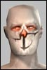
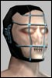

Bellkira
Eleet
 Registered: Apr 2002
Posts: 6 |  Hunting spots 60-100? Hunting spots 60-100?I know of the vb camp, and 8x8 in pleasant meadows, but are there any other good spots to hunt that arent in a mission for levels 60 up to 100? Ive worn out the nw mines in lush and I havent had much luck just "exploring" and looking for other hunting spots. Im omni btw so clan spots wont help me  Thanks!
---
Orun
63 crat
Angels of War
Rk-2 |
Fryxx
Eleet
 Registered: Mar 2002
Posts: 20 | Just outside of trade is where I like to hunt...
Go out the gate to Harry's - but instead of using the transport, turn right and jump in the water. Swim along the wall till you hit the land and turn right around the building. There are fields there with decent amounts of green-to-red's there, and off to the left is a small camp full mostly with red claws.
Also, there is a good spot in the fields just outside 20k.
Go out the front gate and go left on the road, just past the OP turn left and proceed along the wall. continue straight and there is a camp directly behind the OP that seems to be good hunting for me (lvl 63) mostly yellow and red.
NOTE: do not go straight up the hill behind 20k (the OP with the big sattelite dish) that is fairly dripping with red vultures and renders that will aggro at the drop of a hat. ** High lvls only there.** The Camp I'm talking about is directly BEHIND the 20k OP.
Both camps are similar to VB & 8x8 only less people hunt them. Last edited by Fryxx on May 11th, 2002 at 01:13 |
Bellkira
Eleet
Registered: Apr 2002
Posts: 6 | Thanks for the tips
Do you mean right as you exit trade, turn right, swim in the water a bit till ya hit land, then follow the city wall around? Or are you talking about inside harrys, by the ferry to 20k? I took a gander and couldnt find where you were talking about 
Ill lookin to the one behind the op in 20k tomorrow, thanks again! |
Fryxx
Eleet
Registered: Mar 2002
Posts: 20 | Yup, go out of trade like you were going to Harry's, but instead of taking the ferry, turn right and swim along the city walls till you hit land again. then turn right past the city walls and follow them to about midpoint (halfway down the wall) turn left and you should hit the camp - it's not far from the city walls.
Also, if you go out of 20k, turn left, and follow the road you will hit another camp, difficulty somewhere between VB and 8x8. Last edited by Fryxx on May 11th, 2002 at 18:05 |


 Last Thread Next Thread
Last Thread Next Thread 
 May 10th, 2002 18:35
May 10th, 2002 18:35